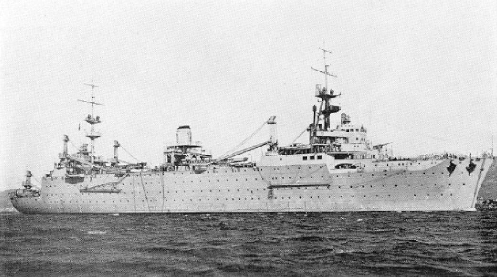

{kind=link}

| Le Porte-Hydravions | |||
|---|---|---|---|
|  | Commandant Teste |
Le Commandant Teste etait un transport d'hydravions francais. Construit par les chantiers de la Gironde entre 1927 et avril 1929, il connut une carriere agitee et fut present dans les principaux drames de la marine francaise pendant la Seconde Guerre mondiale. D'abord l'Attaque de Mers el-Kebir le 3 juillet 1940 et le sabordage de la flotte a Toulon le 27 novembre 1942. Son nom est un hommage au capitaine de corvette Paul Teste (1892-1925), un des pionniers de l'aviation navale en France. Il rejoint ensuite le port de Toulon ou il est place en gardiennage puis sert au groupe des ecoles. Il s'y trouve toujours quand, le 27 novembre 1942, l'amiral Jean de Laborde ordonne de saborder la flotte francaise basee a Toulon, apres l'invasion de la zone libre par les Allemands. Il sera renfloue en 1943 par les Italiens, puis de nouveau coule en 1944 par des bombardiers allies. Apres avoir ete le sujet en juin 1945 d'une discussion quant a la decision de le demolir ou de le transformer en porte-avions leger, il sera finalement utilise comme entrepot flottant en 1950, puis vendu pour etre demoli en 1963. |
Longueur : 167 m Maitre-bau : 27 m Tirant d'eau : 7,4 m Deplacement : 10 000 tonnes (lege) 11 500 tonnes (pleine charge) Propulsion : 2 turbines a vapeurs Schneider-Zoelly 4 chaudieres a surchauffe Yarrow Puissance : 21 000 ch Vitesse : 20,5 kt |
Retrouver la page complète sur Github UwU
Vous pouvez me contacter sur Discord via mon # = Alice(SaabniaTv)#0001 ou via mon serveur discord